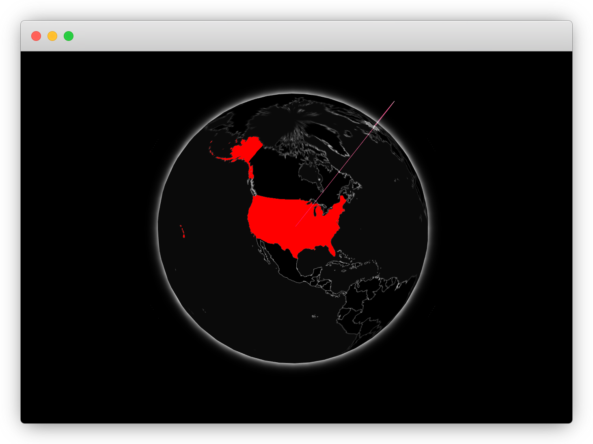

Chapter 10 Final Revisions
In this chapter we polish the API that gio presents its users and provide guidelines to best integrate other JavaScript libraries with R.
10.1 Htmlwidgets & Data
The gio package built thus far revolves around the gio function which expects a dataframe with three columns named e, i, and v, which is not great practice; there are great reasons why very few functions do that.
First, it is unlikely that one comes across a dataset with such names in the real world thus users of the package will likely need to rename the columns of the dataset in order to use gio making the package rather unwieldy. Second, this makes understanding and approaching the gio package more complicated, it will not be evident by looking at the examples, and usage of gio.
Instead gio should accept the dataframe as first argument and then the relevant columns to extract. This can be implemented in many ways ranging from arguments that accept the column names as strings to reproducing ggplot2’s aes function. Below we settle for a solution probably lying somewhere in between: using non-standard evaluation to provide arguments that accept the bare name of the columns.
gio <- function(data, source, target, value, ...,
width = NULL, height = NULL, elementId = NULL) {
# defaults to NULL
group <- NULL
if (crosstalk::is.SharedData(data)) {
group <- data$groupName()
data <- data$origData()
}
data <- dplyr::select(
data,
i = {{ source }},
e = {{ target }},
v = {{ value }}
)
# forward options using x
x = list(
configs = list(...),
data = data,
style = "default",
crosstalk = list(group = group)
)
attr(x, 'TOJSON_ARGS') <- list(dataframe = "rows")
# create widget
htmlwidgets::createWidget(
name = 'gio',
x,
width = width,
height = height,
package = 'gio',
elementId = elementId,
sizingPolicy = htmlwidgets::sizingPolicy(
padding = 0,
browser.fill = TRUE,
defaultWidth = "100%"
),
preRenderHook = render_gio,
dependencies = crosstalk::crosstalkLibs()
)
}The above changes allows documentation the input that gio accepts more clearly and also makes its usage more transparent: it is now clear to users what data is required to create a visualisation and they are free to use dataframes of their choice.
# mock up data
countries <- c("US", "BE", "FR", "DE")
df <- data.frame(
from = countries,
to = rev(countries),
traded = runif(4)
)
# use gio
gio(df, source = from, target = to, value = traded)This small change makes the package a great deal easier to use and understand.
10.2 Plethora of Options
Some JavaScript libraries can be extensive and come with thousands of options that can make the port to R rather bulky, never hesitate to make use of the three dots construct (...) to make these accessible yet saving you from having to hard-code thousands of arguments.
For instance gio.js accepts a JSON of options to further customise the globe. One could port all of these manually, or allow users to specify those configurations via the three-dot construct.
var configs = {
control: {
stats: false,
disableUnmentioned: false,
lightenMentioned: false,
inOnly: false,
outOnly: false,
initCountry: "CN",
halo: true
},
color: {
surface: 0xFFFFFF,
selected: null,
in: 0x154492,
out: 0xDD380C,
halo: 0xFFFFFF,
background: null
},
brightness: {
ocean: 0.5,
mentioned: 0.5,
related: 0.5
}
}
controller = new Gio.controller(el, configs);The three dots can be added to the gio function which internally captures them in a list named configs so it can be easily referenced in JavaScript.
# add ...three dots
gio <- function(data, source, target, value, ...,
width = NULL, height = NULL, elementId = NULL) {
# ... start of the function
# forward options using x
x = list(
configs = list(...), # pass to configs
data = data,
style = "default",
crosstalk = list(group = group)
)
# ... end of the function
}In JavaScript, use the configs when initialising the visualisation.
Below those configuration options are now used to set the initially selected country to the United States and change the colour of the selected country to red.

10.3 Interface Design
As you develop a wrapper to an external visualisation library you will have to make design choices. In building gio we more or less mirrored the JavaScript code one to one: where there is a JavaScript function to change the theme of the visualisation there is one in R, etc. This might not scale properly as more and more functions are added to the package.
As observed the gio.js library has a function named setStyle to change the theme of the visualisation but it has numerous others, setSurfaceColor, addHalo, setHaloColor, removeHalo, and plenty more. We might want to wrap all or some of these in a single function to provide a more convenient API to the R user.
Design for humans: always keep in mind the interface you make available to users as you develop the package.
You can always go beyond what the underlying library provides. For instance, the country selected by default is always China, regardless of whether the data includes that country or not. This can lead to creating underwhelming visualisations as no arcs appear. One can consider adding to the gio function simple heuristics to ensure that is not the case, or have the function throw a warning when the initial country is not present in the dataset.
Finally, consider R users’ expectations. There are many prominent visualisation packages on CRAN already, users of the gio package will likely have used ggplot2 (Wickham, Chang, et al. 2020), plotly, or highcharter before. Though these provide somewhat different APIs they set precedents, the more the API of gio resembles those the easier it will be for new users to start using gio. However, do not let this restrict the package either, never hesitate to do differently than ggplot2 if you think it will provide a better interface to your users.
References
Wickham, Hadley, Winston Chang, Lionel Henry, Thomas Lin Pedersen, Kohske Takahashi, Claus Wilke, Kara Woo, Hiroaki Yutani, and Dewey Dunnington. 2020. Ggplot2: Create Elegant Data Visualisations Using the Grammar of Graphics. https://CRAN.R-project.org/package=ggplot2.